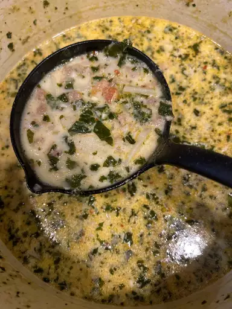
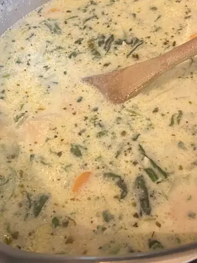

Super-Delicious Zuppa Toscana
Zuppa Toscana is oh-so-good! This recipe has just the right amount of spiceto keep you coming back for more!
Recipe by souporsweets updated on April 24-2023
- 
- 

-
Prep Time:
20 mins -
Cook Time:
50 mins -
total Time:
1 hr 20 mins -
Servings:
8